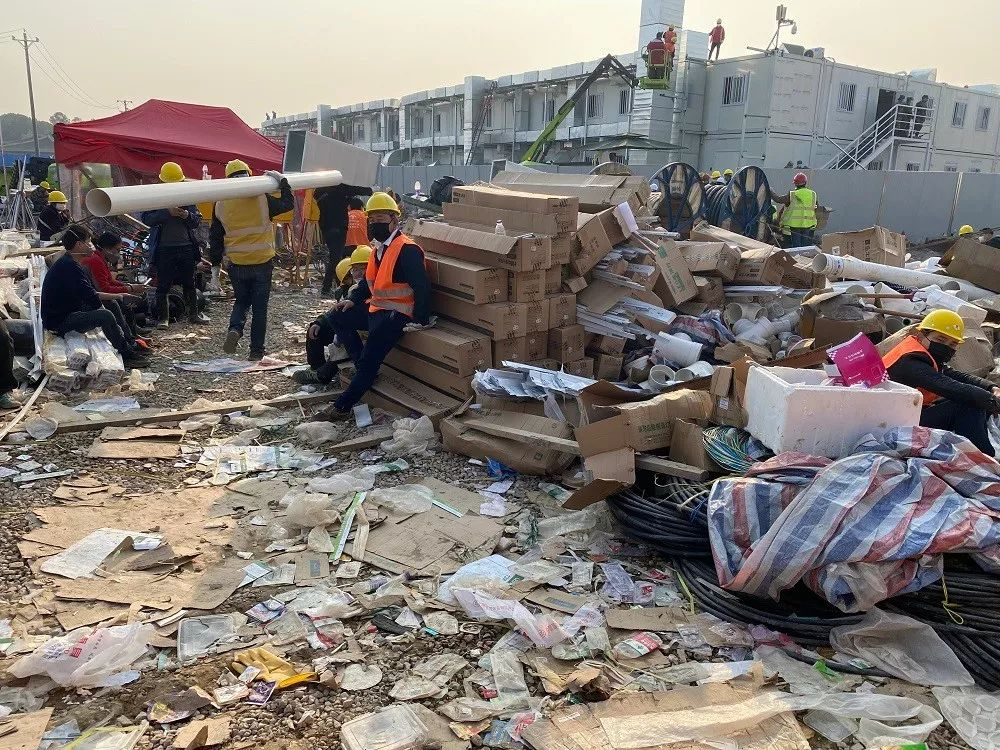
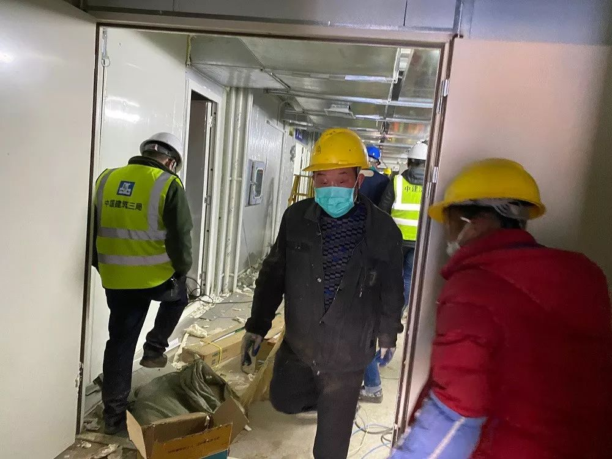
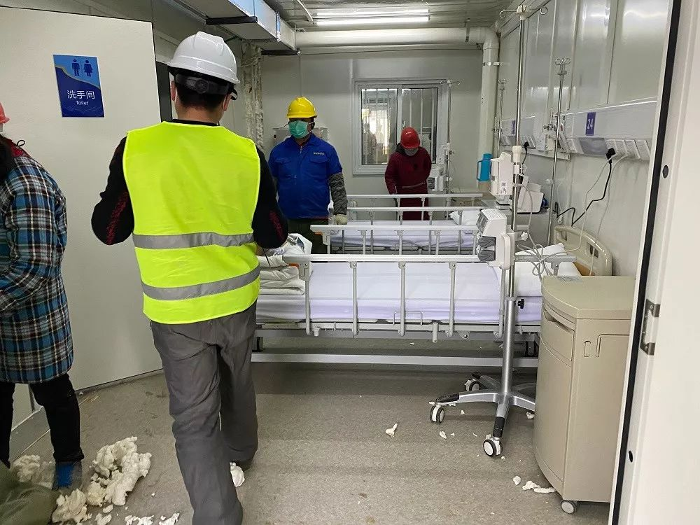
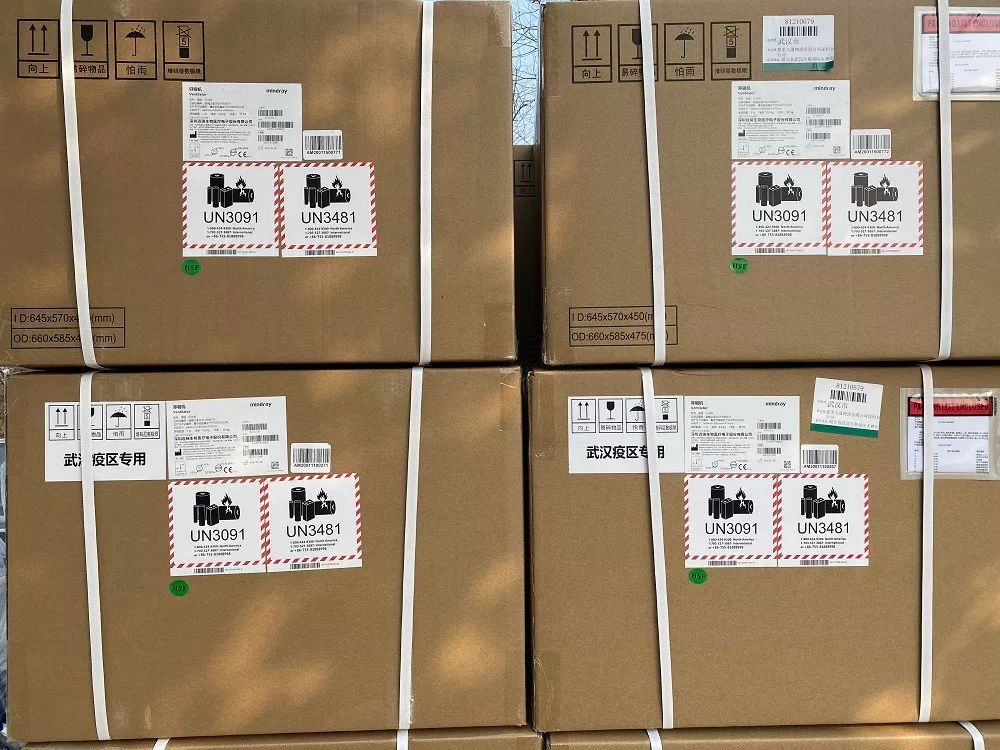

火神山“三千勇士” |武汉肺炎亲历-中经实时报-中国经营网
原文链接 备份链接 火神山“三千勇士” |武汉肺炎亲历 2020-01-28 08:20 作者：王迎春 来源：中国经营网 本报记者 王迎春 武汉报道 1月27日，武汉市蔡甸区知音湖畔，占地5万平方米的滩涂草坡地完全变了模样，工人们正在操作 …

因抗击疫情而诞生的武汉火神山医院，创下建设速度和科技装备的历史之最。2月4日上午，率先启用的部分病房正式接收了第一批病人。《财经》记者2月3日下午在现场看到，负责收尾的数千名工作人员仍保持高强度作业，完成最后的设备装配
文 |《财经》记者 刘以秦 发自武汉 《财经》记者 韩舒淋 发自北京
编辑 | 谢丽容
2月2日，以罕见速度建成的武汉火神山医院举行了隆重的建成交付仪式。按计划，约1400名军队医务人员将于2月3日开始承担救治任务。《财经》记者获悉，2月3日晚8时左右，火神山医院部分先期完成医用设备装配的病房，准备接收运转过来的病人。2月4日上午9点20分左右，救护车队抵达火神山医院，第一批病人已经入住。据央视报道，目前入院病人约50位。
2月3日下午2点，《财经》记者赶到位于武汉市蔡甸区的火神山医院，看到现场部分区域仍处于建成交付后的设备装配收尾阶段，空调、通风设备等在陆续安装，一些呼吸机、病床等医疗器械摆放在通往火神山的道路旁。不过在医院里部分病房内，《财经》记者看到，一些病床已经准备就绪，部分安装好的通风、保温、保湿等设备已经开始运行。
一位现场施工人员告诉《财经》记者，早上他看到有一辆救护车进来，但很快在武警护送下折返。《财经》记者在现场看到两辆救护车，车上未见医护人员和患者。
“现在还不能送病人进来。”一位施工管理人员向《财经》记者解释说，他预计还需要2-3天，火神山医院才能全部完成设备装配并投入使用。据悉，旁边的雷神山医院由于建设启动时间略晚，应当会比火神山医院要再多几天，才能完成设备装配并正式启用。
2月3日下午4点左右，这名管理人员听到消息说，当天可能会有病人送达。截止下午6点，《财经》记者在现场还未看到有病人送达。不过《财经》记者看到医院里出现了不少医务人员和武警，在为收治病人做准备工作。一位医务人员对《财经》记者表示，她也不清楚什么时候开始收治病人。
两个小时后，2月3日晚上8点左右，《财经》记者获悉，首批病人开始从各定点医院向火神山医院转运。武汉急救中心派出十辆救护车参与了这次转运行动。火神山医院部分率先完成医用设备装配的病房，可以收治运转过来的病人，这意味着医院正式启用了。
晚上10点，火神山医院现场气氛紧张，现场数千名工作人员加快收尾工作严阵以待，一些工作人员开始做病房启用前的最后准备，如清扫路面楼梯、保洁病房等。现场工作人员接到通知称，首批将转运进几十名病人，病人入住后，他们将继续完成收尾的装配工作。截至2月3日晚11点20分记者发稿，首批病人尚未入院。据央视新闻频道报道，病人已在路上。
《财经》记者在火神山现场了解到，2月3日晚上，救护车在距离火神山10分钟路程时返回，由于病房还未准备完全，调整至2月4日白天开始接收病人。根据央视报道，2月4日上午9点20左右，第一批病人已经入院，目前有50位病人在火神山医院集中收治。
从1月24日火神山医院相关设计方案完成，到2月2日建成交付，2月4日开始收治病人，武汉火神山医院已经创造了多项新的记录。
一位来自华为的火神山医院项目工程师告诉《财经》记者，如果说此前的施工速度是步行，紧急的任务是跑步，“那这次就是坐着火箭前进的速度。”这背后是大量工作人员夜以继日的努力，以及科技进步的结果。








图片由《财经》特派记者刘以秦拍摄
火神山医院的重任
火神山医院位于武汉市蔡甸区，知音湖旁。该医院参照2003年抗击非典期间北京小汤山医院模式，在武汉职工疗养院建设一座专门医院，集中收治新型冠状病毒肺炎患者。医院总建筑面积3.39万平方米，编设床位1000张，开设重症监护病区、重症病区、普通病区，设置感染控制、检验、特诊、放射诊断等辅助科室。
中建三局发布的公开信息显示，全面施工前，需平整好施工场地东西高差最大达近10米的地面，既有建筑物需要拆除，还有大量清淤工作和鱼塘回填任务。然而，整个项目临水而建，周边只有一条主干道路通往工地，物资交通进出压力巨大，燃气、高压迁改协调量较大。
此次中建三局共派出4000名工人，另外还有不少来自其他建筑工程公司的工人以及当地的居民参与建设。《财经》记者看到，留在现场做装配收尾的工作人员仍然保持高强度作业，一位现场管理人员透露目前火神山施工现场还有数千名工作人员。
上述管理人员称，工人目前两班倒，每班12小时，管理人员休息时间更少，他个人自除夕之后平均每天休息2小时。《财经》记者注意到他双眼通红、声音嘶哑到几乎说不出话来。
华为、联想、新华三等科技设备厂商均是参与了此次火神山医院建设。华为派出了100多名工作人员，与运营商合作，帮助搭建医院现场的网络设备。联想派15个员工为医院带去了500台电脑和275台打印机。
前述华为工程师表示，他们遇到最大的困难就是人员调配。火神山开工时，武汉已经封城，武汉周边城镇也有不同程度的封路，一些在农村老家的同事甚至都出不了村。要按时完工必须有充足的人手，通过各方协调，华为最终实现人员到达，但也不够用，“我们所有人都是一个人当两个人用，很少有时间能休息，工人们还有配餐，我们只能自己凑合着吃点。”
联想为火神山医院捐助了500台电脑和275台打印机。一位参与援建的项目主管告诉《财经》记者，临近春节，大部分武汉当地员工已经回家，临时找人确实有点困难，此外，安装电脑和打印机等设备本来很简单，但是在火神山那样时间极其紧、网络环境不完备的环境下，会有许多现实困难。
上述联想项目主管透露，整个火神山医院信息化建设的微信群有四十多个，每一分钟都有大量的微信信息涌出，因涉及大量协作工作，让他们不敢遗漏一条信息。
实时疫情通报显示，截止2月3日21点，湖北省确诊病例11177人，治愈数295人，新增病例2103人。其中武汉市累计确诊5142人，治愈228人，死亡265人。武汉市卫健委数据显示，截止2月2日23点，武汉市定点医院共计开放床位7259张，已用7332张，还有131张空床位。
武汉确诊病例数量还在不断攀升，大量疑似病患住院难的问题越发突出。一位一线定点医院的医生告诉《财经》记者，火神山和雷神山医院开放使用后，可以有效缓解市区内医院的压力，确诊的重症病人可以立即转院，“我们就可以开放出病床给其他病患。”
据悉，火神山与雷神山医院加起来共有2600张病床。但从公开的数据看，湖北省2月2日新增2103名确诊病例，其中武汉新增1033例。外界担心，两家医院启用后是否足够。有一位定点医院医生告诉《财经》记者，目前真正重症的患者数量并不是非常多，大部分都还是轻症患者，可以自行在家隔离，或是社区统一安排隔离。
“火神山速度”背后
相比2003年非典时期的小汤山，此次建设火神山和雷神山医院，一大亮点是新技术的使用。
对于大部分普通人来说，初次见到火神山的样子，是通过央视的直播，在火神山现场，布置了多个摄像头，实时记录建设现场。此次火神山医院的现场通讯和网络设备，由多个科技厂商参与建设。
2月3日上午，华为的一名一线工作人员告诉《财经》记者，他们又新布置了球形摄像头和VR设备，大家可以在手机上360度仔细观看火神山和雷神山的进展，他提到，马上医疗物资会大量抵达两座医院，社会各界也在密切关注和监督物资发放的情况，VR技术可以帮助实现这一需求。
相比17年前的小汤山医院，模块化的、可像积木一样“拼凑”的吊装式箱式板房极大地加快了火神山医院的建设速度，让“10天建起一座医院”成为可能。
火神山医院不仅采用了现代化建设技术，同样在建设和运营中使用了大量高科技，包括5G、云计算等。火神山医院工期十天，实际上留给信息化建设的时间不过4-5天，云计算技术则显著加速了整个建设周期。
例如，火神山医院医院HIS、PACS等核心信息系统是基于中国电信天翼云来部署，因为采用云化部署，中国电信仅用12小时就完成了信息系统建设，而传统模式下最少要十天。上述联想主管也表示，因为使用了智能云桌面技术，仅用了24小时就安装调试完近八百台设备。
5G技术还可用于实现远程智慧医疗和远程会诊。对于患者来说，时间就是生命，武汉当地的医疗资源有限，各地方也需要医护人员的留守。尤其是大范围的传染性疾病爆发时，这一技术的直接效果是：能够减少接触；让病患尽快接受诊疗；让重症病患尽快接受多位专家会诊。
在4G时代，远程医疗已经实现，但5G的优势是在多名医生会诊时，保障网络的畅通，华为工程师表示，当下他们已经不会去计较技术的性价比，只关心是否能为患者的救治，尽最大的努力。
在外部设备上，新技术也无处不在。新冠肺炎是呼吸系统疾病，对于空气净化的要求非常高，火神山医院和雷神山医院的病房专门设置了负压系统，将室内脏空气通过特定管道排出。
由于对空气质量要求非常高，空调设备也需要避免污染，此次火神山和雷神山的建设中，美的和格力各捐献了1000台和1605台空调，两家公司的相关负责人告诉《财经》记者，此次捐献的空调，都是配备了新技术的新风空调，可以有效排出污浊空气，避免空气污染。
普渡科技创始人、CEO 张涛告诉《财经》记者，他们也已经对接上了火神山和雷神山，计划提供医用送餐机器人，预计两家医用各会使用50台。
普渡的机器人可以在医院和隔离区提供免接触送餐技术，减少传染可能性。产品手册介绍显示，应用了自主开发的SLAM（即时定位与地图构建）技术，可以实现厘米级实时定位、高精度地图构建、最优路径规划和瞬时智能避障功能，此外针对多机协作，应用了自主研发的分布式调度系统。机器人电池四小时可以充满，通过换电可以实现连续不间断运行。
火神山医院的选址靠近知音湖，且武汉地下水系丰富，临时医院的建设是否会导致污染，是许多武汉市民关心的问题。
武汉一家有环保领域设计经验的设计院人士对《财经》分析，在进行医院设计时，需要考虑雨污分流：一是医疗废水，需要经过成套装置杀菌消毒，然后进入城市下水系统，最终进入污水处理厂处理；另一部分是渗滤液，如雨水带走医院内病菌，还有运输医疗垃圾途中可能产生的渗透液。
通常，前一种废水是可通过医院集中收集，进入前端污水处理设备，经过物理格栅、生化处理达标排放后，排入临近污水处理厂处理。而后一种渗透液的风险需要做好防渗透处理，一般需要在施工过程中铺上防渗膜隔绝地表水向地下的渗透和污染，避免对临近水体以及地下水造成污染。
中建三局参与项目的相关人士对《财经》记者表示，医院的废水将处理后排放到市政管网，在防渗透方面，一是管道下方铺设有两层防渗透膜，二是项目所在地的板房下方也都满铺了防渗透膜。该人士还表示，中建三局此前已有丰富的医院项目建设施工经验，武汉当地的汉口同济医院、光谷同济医院、武汉亚洲心脏医院等知名医院都是由中建三局施工建设，因此熟悉相关的施工标准。
《湖北日报》旗下荆楚网1月26日报道称，火神山医院在土地平整之后铺设了铺设两布一膜——两层土工布及一层HDPE防渗膜，然后再铺设20公分砂子，具有较强的防渗作用。在废水处理方面，由中建三局绿投公司组织相关专家设计，废水经三级液氯消毒后泵送市政管网。整个基地下方按垃圾填埋场标准铺设防渗膜，雨水全收集全消毒。
2月2日晚7点半，火神山交接仪式已经完成，武汉籍的华为工程师离开现场，返回市区休整。他告诉妻子，可以看火神山的VR直播了， “这是我们为武汉人民做的。”他说。建筑工人在完工后会陆续撤出，但技术工程师们的后续任务更重，他们要保证在医院的整个使用期间，设备一直保持顺畅。
（《财经》记者周源亦有贡献）
声明：本文为《财经》与腾讯新闻独家合作内容，谢绝转载
新型冠状病毒疫情系列报道

▷ 点击图片查看
责编 | 黄端 duanhuang@caijing.com.cn
本文为《财经》杂志原创文章，未经授权不得转载或建立镜像。如需转载，请在文末留言申请并获取授权。
原文链接 备份链接 火神山“三千勇士” |武汉肺炎亲历 2020-01-28 08:20 作者：王迎春 来源：中国经营网 本报记者 王迎春 武汉报道 1月27日，武汉市蔡甸区知音湖畔，占地5万平方米的滩涂草坡地完全变了模样，工人们正在操作 …
原文链接 备份链接 拥有1000张床位的火神山医院今天开始接收病人，主要救治确诊患者。 1400位来自军队的医护人员已经抵达，院长张思兵大校是SARS防治专家。 拥有1600张床位的雷神山医院预计2月5日完工。 两家医院投入使用一 …
原文链接 备份链接 ********** *****黄锡璆表示，现在的技术条件比建设小汤山医院时好多了，他希望火神山医院的建设能够实现更好的使用效果。***** 火神山医院施工现场。受访者供图 文 | 新京报记者 韩沁珂 编辑｜王婧祎 校 …
原文链接 备份链接 2020年2月4日上午9点26分，备受瞩目的武汉火神山医院收治了它的第一批患者，一共50位。据媒体报道，他们分别来自汉口医院、武昌医院等三所医院，转运任务由武汉市急救中心负责。从武汉城区，到远郊的蔡甸知音湖边，这50名 …
原文链接 备份链接 杨晨还在等通知。他在等待“十号令”带给他以及他的家庭命运的转机，他是一位“武汉病人”的家属。 让他有所期许的“十号令”，是2月2日发出的。按照“十号令”的要求，自通告发布之日起，对全市经发热门诊诊断有肺炎症状的发热病人 …